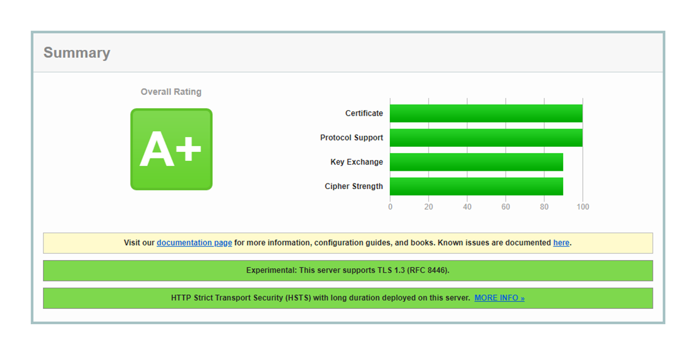
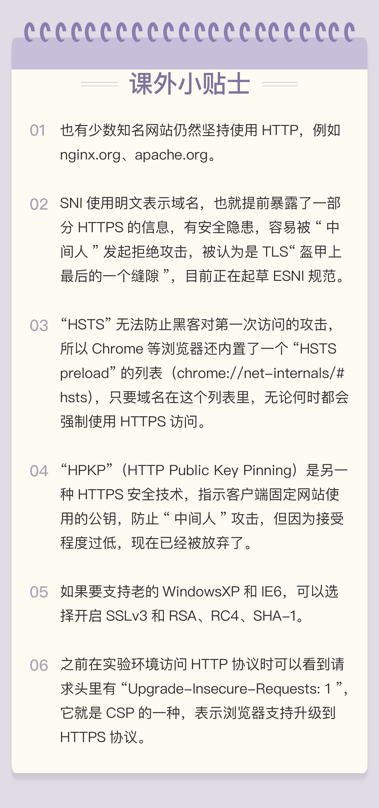

- 00 开篇词｜To Be a HTTP Hero.md.html
- 01 时势与英雄：HTTP的前世今生.md.html
- 02 HTTP是什么？HTTP又不是什么？.md.html
- 03 HTTP世界全览（上）：与HTTP相关的各种概念.md.html
- 04 HTTP世界全览（下）：与HTTP相关的各种协议.md.html
- 05 常说的“四层”和“七层”到底是什么？“五层”“六层”哪去了？.md.html
- 06 域名里有哪些门道？.md.html
- 07 自己动手，搭建HTTP实验环境.md.html
- 08 键入网址再按下回车，后面究竟发生了什么？.md.html
- 09 HTTP报文是什么样子的？.md.html
- 10 应该如何理解请求方法？.md.html
- 11 你能写出正确的网址吗？.md.html
- 12 响应状态码该怎么用？.md.html
- 13 HTTP有哪些特点？.md.html
- 14 HTTP有哪些优点？又有哪些缺点？.md.html
- 15 海纳百川：HTTP的实体数据.md.html
- 16 把大象装进冰箱：HTTP传输大文件的方法.md.html
- 17 排队也要讲效率：HTTP的连接管理.md.html
- 18 四通八达：HTTP的重定向和跳转.md.html
- 19 让我知道你是谁：HTTP的Cookie机制.md.html
- 20 生鲜速递：HTTP的缓存控制.md.html
- 21 良心中间商：HTTP的代理服务.md.html
- 22 冷链周转：HTTP的缓存代理.md.html
- 23 HTTPS是什么？SSLTLS又是什么？.md.html
- 24 固若金汤的根本（上）：对称加密与非对称加密.md.html
- 25 固若金汤的根本（下）：数字签名与证书.md.html
- 26 信任始于握手：TLS1.2连接过程解析.md.html
- 27 更好更快的握手：TLS1.3特性解析.md.html
- 28 连接太慢该怎么办：HTTPS的优化.md.html
- 29 我应该迁移到HTTPS吗？.md.html
- 30 时代之风（上）：HTTP2特性概览.md.html
- 31 时代之风（下）：HTTP2内核剖析.md.html
- 32 未来之路：HTTP3展望.md.html
- 33 我应该迁移到HTTP2吗？.md.html
- 34 Nginx：高性能的Web服务器.md.html
- 35 OpenResty：更灵活的Web服务器.md.html
- 36 WAF：保护我们的网络服务.md.html
- 37 CDN：加速我们的网络服务.md.html
- 38 WebSocket：沙盒里的TCP.md.html
- 39 HTTP性能优化面面观（上）.md.html
- 40 HTTP性能优化面面观（下）.md.html
- 结束语 做兴趣使然的Hero.md.html
- 捐赠
29 我应该迁移到HTTPS吗？
今天是“安全篇”的最后一讲，我们已经学完了 HTTPS、TLS 相关的大部分知识。不过，或许你心里还会有一些困惑：
“HTTPS 这么复杂，我是否应该迁移到 HTTPS 呢？它能带来哪些好处呢？具体又应该怎么实施迁移呢？”
这些问题不单是你，也是其他很多人，还有当初的我的真实想法，所以今天我就来跟你聊聊这方面的事情。
迁移的必要性
如果你做移动应用开发的话，那么就一定知道，Apple、Android、某信等开发平台在 2017 年就相继发出通知，要求所有的应用必须使用 HTTPS 连接，禁止不安全的 HTTP。
在台式机上，主流的浏览器 Chrome、Firefox 等也早就开始“强推”HTTPS，把 HTTP 站点打上“不安全”的标签，给用户以“心理压力”。
Google 等搜索巨头还利用自身的“话语权”优势，降低 HTTP 站点的排名，而给 HTTPS 更大的权重，力图让网民只访问到 HTTPS 网站。
这些手段都逐渐“挤压”了纯明文 HTTP 的生存空间，“迁移到 HTTPS”已经不是“要不要做”的问题，而是“要怎么做”的问题了。HTTPS 的大潮无法阻挡，如果还是死守着 HTTP，那么无疑会被冲刷到互联网的角落里。
目前国内外的许多知名大站都已经实现了“全站 HTTPS”，打开常用的某宝、某东、某浪，
都可以在浏览器的地址栏里看到“小锁头”，如果你正在维护的网站还没有实施 HTTPS，那可要抓点紧了。
迁移的顾虑
据我观察，阻碍 HTTPS 实施的因素还有一些这样、那样的顾虑，我总结出了三个比较流行的观点：“慢、贵、难”。
所谓“慢”，是指惯性思维，拿以前的数据来评估 HTTPS 的性能，认为 HTTPS 会增加服务器的成本，增加客户端的时延，影响用户体验。
其实现在服务器和客户端的运算能力都已经有了很大的提升，性能方面完全没有担心的必要，而且还可以应用很多的优化解决方案（参见[第 28 讲]）。根据 Google 等公司的评估，在经过适当优化之后，HTTPS 的额外 CPU 成本小于 1%，额外的网络成本小于 2%，可以说是与无加密的 HTTP 相差无几。
所谓“贵”，主要是指证书申请和维护的成本太高，网站难以承担。
这也属于惯性思维，在早几年的确是个问题，向 CA 申请证书的过程不仅麻烦，而且价格昂贵，每年要交几千甚至几万元。
但现在就不一样了，为了推广 HTTPS，很多云服务厂商都提供了一键申请、价格低廉的证书，而且还出现了专门颁发免费证书的 CA，其中最著名的就是“Let’s Encrypt”。
所谓的“难”，是指 HTTPS 涉及的知识点太多、太复杂，有一定的技术门槛，不能很快上手。
这第三个顾虑比较现实，HTTPS 背后关联到了密码学、TLS、PKI 等许多领域，不是短短几周、几个月就能够精通的。但实施 HTTPS 也并不需要把这些完全掌握，只要抓住少数几个要点就好，下面我就来帮你逐个解决一些关键的“难点”。
申请证书
要把网站从 HTTP 切换到 HTTPS，首先要做的就是为网站申请一张证书。
大型网站出于信誉、公司形象的考虑，通常会选择向传统的 CA 申请证书，例如 DigiCert、GlobalSign，而中小型网站完全可以选择使用“Let’s Encrypt”这样的免费证书，效果也完全不输于那些收费的证书。
“Let’s Encrypt”一直在推动证书的自动化部署，为此还实现了专门的 ACME 协议（RFC8555）。有很多的客户端软件可以完成申请、验证、下载、更新的“一条龙”操作，比如 Certbot、acme.sh 等等，都可以在“Let’s Encrypt”网站上找到，用法很简单，相关的文档也很详细，几分钟就能完成申请，所以我在这里就不细说了。
不过我必须提醒你几个注意事项。
第一，申请证书时应当同时申请 RSA 和 ECDSA 两种证书，在 Nginx 里配置成双证书验证，这样服务器可以自动选择快速的椭圆曲线证书，同时也兼容只支持 RSA 的客户端。
第二，如果申请 RSA 证书，私钥至少要 2048 位，摘要算法应该选用 SHA-2，例如 SHA256、SHA384 等。
第三，出于安全的考虑，“Let’s Encrypt”证书的有效期很短，只有 90 天，时间一到就会过期失效，所以必须要定期更新。你可以在 crontab 里加个每周或每月任务，发送更新请求，不过很多 ACME 客户端会自动添加这样的定期任务，完全不用你操心。
配置 HTTPS
搞定了证书，接下来就是配置 Web 服务器，在 443 端口上开启 HTTPS 服务了。
这在 Nginx 上非常简单，只要在“listen”指令后面加上参数“ssl”，再配上刚才的证书文件就可以实现最基本的 HTTPS。
listen 443 ssl;
ssl_certificate xxx_rsa.crt; #rsa2048 cert
ssl_certificate_key xxx_rsa.key; #rsa2048 private key
ssl_certificate xxx_ecc.crt; #ecdsa cert
ssl_certificate_key xxx_ecc.key; #ecdsa private ke
为了提高 HTTPS 的安全系数和性能，你还可以强制 Nginx 只支持 TLS1.2 以上的协议，打开“Session Ticket”会话复用：
ssl_protocols TLSv1.2 TLSv1.3;
ssl_session_timeout 5m;
ssl_session_tickets on;
ssl_session_ticket_key ticket.key;
密码套件的选择方面，我给你的建议是以服务器的套件优先。这样可以避免恶意客户端故意选择较弱的套件、降低安全等级，然后密码套件向 TLS1.3“看齐”，只使用 ECDHE、AES 和 ChaCha20，支持“False Start”。
ssl_prefer_server_ciphers on;
ssl_ciphers ECDHE-ECDSA-AES256-GCM-SHA384:ECDHE-RSA-AES256-GCM-SHA384:ECDHE-RSA-AES128-GCM-SHA256:ECDHE-RSA-CHACHA20-POLY1305:ECDHE+AES128:!MD5:!SHA1;
如果你的服务器上使用了 OpenSSL 的分支 BorringSSL，那么还可以使用一个特殊的“等价密码组”（Equal preference cipher groups）特性，它可以让服务器配置一组“等价”的密码套件，在这些套件里允许客户端优先选择，比如这么配置：
ssl_ciphers
[ECDHE-ECDSA-AES128-GCM-SHA256|ECDHE-ECDSA-CHACHA20-POLY1305];
如果客户端硬件没有 AES 优化，服务器就会顺着客户端的意思，优先选择与 AES“等价”的 ChaCha20 算法，让客户端能够快一点。
全部配置完成后，你可以访问“SSLLabs”网站，测试网站的安全程度，它会模拟多种客户端发起测试，打出一个综合的评分。
下图就是 GitHub 网站的评分结果：

服务器名称指示
配置 HTTPS 服务时还有一个“虚拟主机”的问题需要解决。
在 HTTP 协议里，多个域名可以同时在一个 IP 地址上运行，这就是“虚拟主机”，Web 服务器会使用请求头里的 Host 字段（参见[第 9 讲]）来选择。
但在 HTTPS 里，因为请求头只有在 TLS 握手之后才能发送，在握手时就必须选择“虚拟主机”对应的证书，TLS 无法得知域名的信息，就只能用 IP 地址来区分。所以，最早的时候每个 HTTPS 域名必须使用独立的 IP 地址，非常不方便。
那么怎么解决这个问题呢？
这还是得用到 TLS 的“扩展”，给协议加个SNI（Server Name Indication）的“补充条款”。它的作用和 Host 字段差不多，客户端会在“Client Hello”时带上域名信息，这样服务器就可以根据名字而不是 IP 地址来选择证书。
Extension: server_name (len=19)
Server Name Indication extension
Server Name Type: host_name (0)
Server Name: www.chrono.com
Nginx 很早就基于 SNI 特性支持了 HTTPS 的虚拟主机，但在 OpenResty 里可还以编写 Lua 脚本，利用 Redis、MySQL 等数据库更灵活快速地加载证书。
重定向跳转
现在有了 HTTPS 服务，但原来的 HTTP 站点也不能马上弃用，还是会有很多网民习惯在地址栏里直接敲域名（或者是旧的书签、超链接），默认使用 HTTP 协议访问。
所以，我们就需要用到第 18 讲里的“重定向跳转”技术了，把不安全的 HTTP 网址用 301 或 302“重定向”到新的 HTTPS 网站，这在 Nginx 里也很容易做到，使用“return”或“rewrite”都可以。
return 301 https://$host$request_uri; # 永久重定向
rewrite ^ https://$host$request_uri permanent; # 永久重定向
但这种方式有两个问题。一个是重定向增加了网络成本，多出了一次请求；另一个是存在安全隐患，重定向的响应可能会被“中间人”窜改，实现“会话劫持”，跳转到恶意网站。
不过有一种叫“HSTS”（HTTP 严格传输安全，HTTP Strict Transport Security）的技术可以消除这种安全隐患。HTTPS 服务器需要在发出的响应头里添加一个“Strict-Transport-Security”的字段，再设定一个有效期，例如：
Strict-Transport-Security: max-age=15768000; includeSubDomains
这相当于告诉浏览器：我这个网站必须严格使用 HTTPS 协议，在半年之内（182.5 天）都不允许用 HTTP，你以后就自己做转换吧，不要再来麻烦我了。
有了“HSTS”的指示，以后浏览器再访问同样的域名的时候就会自动把 URI 里的“http”改成“https”，直接访问安全的 HTTPS 网站。这样“中间人”就失去了攻击的机会，而且对于客户端来说也免去了一次跳转，加快了连接速度。
比如，如果在实验环境的配置文件里用“add_header”指令添加“HSTS”字段：
add_header Strict-Transport-Security max-age=15768000; #182.5days
那么 Chrome 浏览器只会在第一次连接时使用 HTTP 协议，之后就会都走 HTTPS 协议。
小结
今天我介绍了一些 HTTPS 迁移的技术要点，掌握了它们你就可以搭建出一个完整的 HTTPS 站点了。
但想要实现大型网站的“全站 HTTPS”还是需要有很多的细枝末节的工作要做，比如使用 CSP（Content Security Policy）的各种指令和标签来配置安全策略，使用反向代理来集中“卸载”SSL，话题太大，以后有机会再细谈吧。
简单小结一下今天的内容：
- 从 HTTP 迁移到 HTTPS 是“大势所趋”，能做就应该尽早做；
- 升级 HTTPS 首先要申请数字证书，可以选择免费好用的“Let’s Encrypt”；
- 配置 HTTPS 时需要注意选择恰当的 TLS 版本和密码套件，强化安全；
- 原有的 HTTP 站点可以保留作为过渡，使用 301 重定向到 HTTPS。
课下作业
- 结合你的实际工作，分析一下迁移 HTTPS 的难点有哪些，应该如何克服？
- 参考上一讲，你觉得配置 HTTPS 时还应该加上哪些部分？
欢迎你把自己的学习体会写在留言区，与我和其他同学一起讨论。如果你觉得有所收获，也欢迎把文章分享给你的朋友。

© 2019 - 2023 Liangliang Lee. Powered by gin and hexo-theme-book.